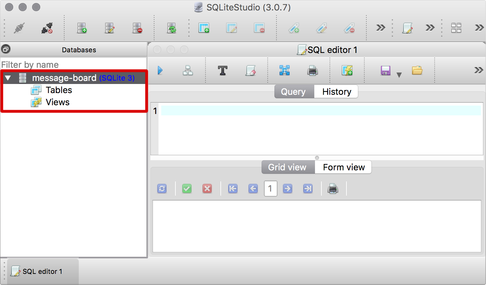

Databases
Storing your app data
Creating a Database
First step, creating a thing!
Open SQLite Studio
SQLite Studio should already be installed.
Open it up so we can get started!
Click “Add a database”
Click the “Add a database” button
at the top left of the app.
Click “Create new database file”

Click the “Create a new database file” button
to the right of the File input box.
Navigate to your project folder

Use the file explorer to find your project
and navigate inside the project folder.
Enter a file name for your database

Enter a name for your database file,
using the file extension .db.
Save the file

Click the “Save” button to save your new database file.
Press OK

Click the “OK” button at the bottom right
to open the database in SQLite Studio
Select your database in the sidebar

Click on your database in the sidebar to select it.
Connect to the database
Once the database is selected,
click the “Connect” button.
The “Tables” and “Views” options should be visible

A connected database will display the Tables and Views
under the database name in the sidebar.
Disconnecting the database
Select the database in the sidebar,
then click the “Disconnect” button.
Creating a database using the shell
We can do the same database creation process
using the command line, which can be a lot faster
once you get used to it.
Open the command line
Open the Command Line app (cmd),
or Terminal if you’re using OSX.
Navigate to your project folder
Use cd to change directory into your project folder.
Open the new database
sqlite3 messenger.db
Type sqlite3 followed by the database file name
you would like to use, and press enter.
Initialise the database
.databases
Type .databases and press enter to initialise the database.
Close the connection
.exit
Type .exit and press enter
to close the database connection.
Check that the file exists
ls
Type ls on OSX or dir on Windows and press enter.
The file messenger.db should be listed.
Naming your Database
Use file naming consistent with the rest of your project,
most likely hyphenated-names or underscore_names.
Use a name relevant to the project
Your database file name should be based on your project name.
Try to avoid generic names like database.db or mydata.db.
Names should be alphanumeric
Use letters with underscores or hyphens only.
Numbers can be used, but should be avoided where possible!
Names should be all lowercase
No capital letters here! Use all lowercase letters.
Use underscores or hyphens instead of spaces
For the database file name you should use naming
conventions consistent with the rest of your project.
Structural Overview
Let’s look briefly at how a SQLite database works
and what is stored inside it.
SQLite databases are a standalone file
This means you can copy it, paste it, delete it,
email it, just like any other file.
Use one database per project
All the data for your whole app is stored in a
single database, with organised data inside.
A single database has many tables
A database is a collection of tables.
Each table stores a specific type of data.
Data can be treated independently of the database
The structure of a database is defined
independently of the data stored within it.
Access Permissions
Protecting a SQLite database with a password
encrypts all the data stored inside.
There is no password protection by default
SQLite databases are open and unencrypted by default.
A password can be added using Python
Encryption can only be enabled by reading the file
from a script and including a command.
SQLite Studio can not open encrypted databases
A very sad side effect of encrypting your database
is that free SQLite GUI programs can’t open them.
Challenge: New project with SQLite Studio
Use SQLite Studio to create a new project called
“SuperChat” containing a new SQLite database.
Make sure to use correct naming conventions!
Challenge: New project with the shell
Use shell commands to create a new project called
“Bake Sale Manager” containing a new SQLite database.
Make sure to use correct naming conventions!
Challenge: Edit with SQLite Studio
Use SQLite Studio to open and connect to your
“Bake Sale Manager” database created using the shell.
What we learned about databases
- Creating
We can create using the command line or SQLite Studio. - Naming
File name should be consistent with other project files. - Structure
A database contains tables which contain actual data. - Permissions
Password protecting a SQLite database is frustrating.

Databases: Complete!
Loading...